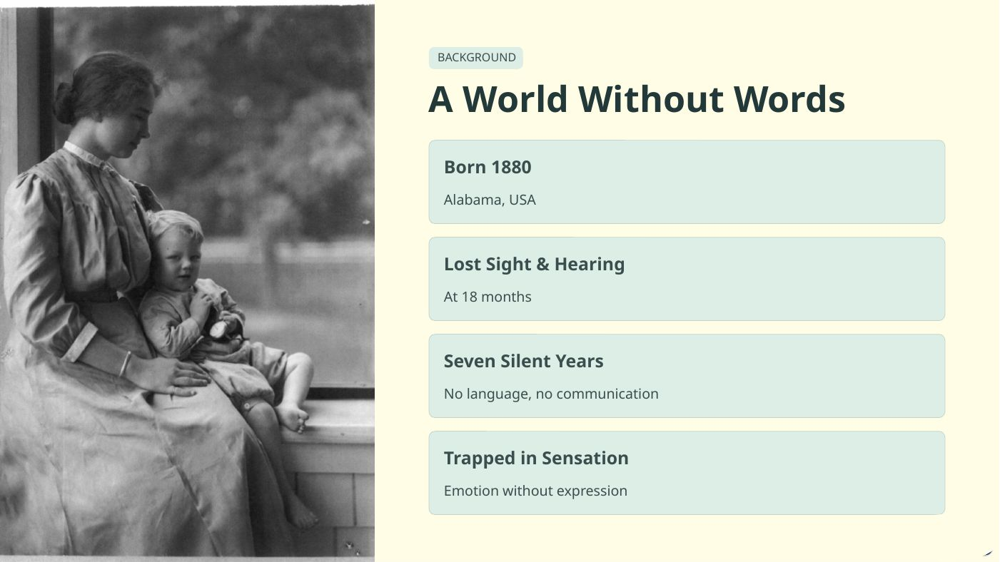
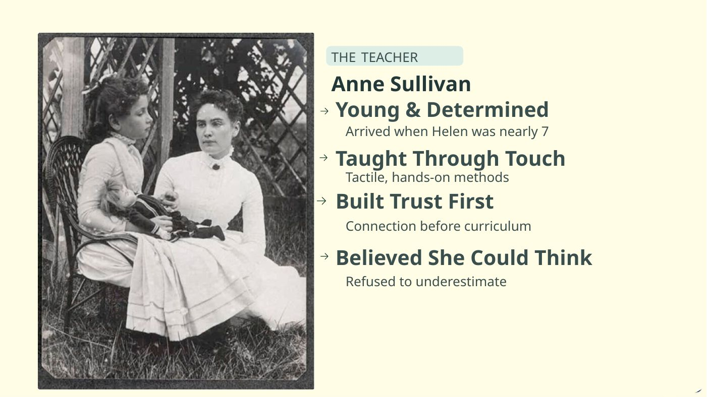
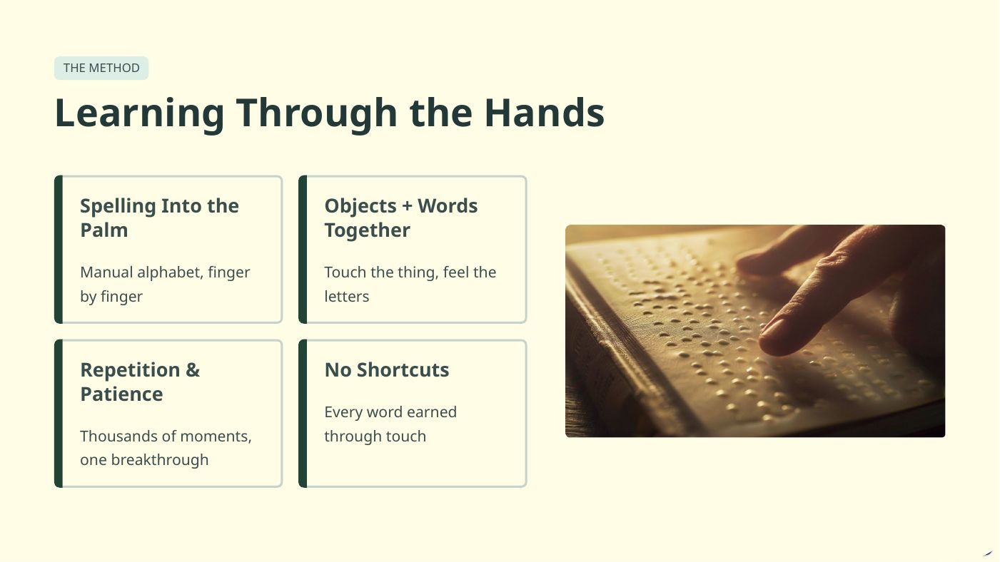
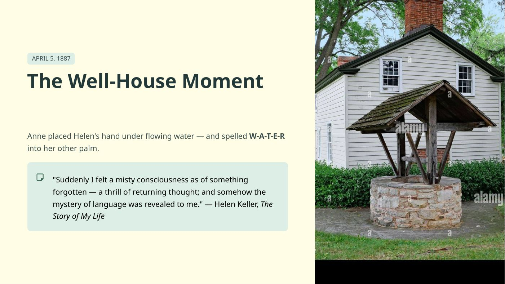
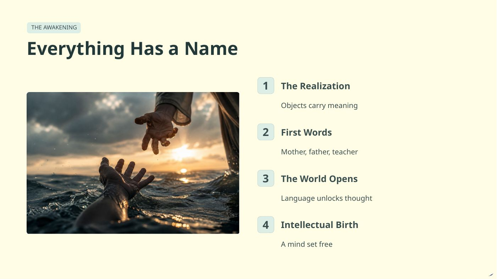
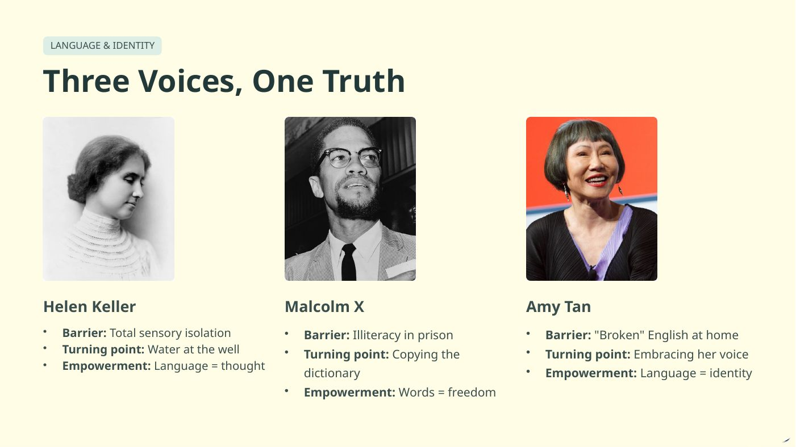
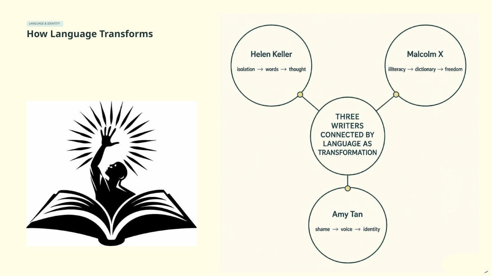
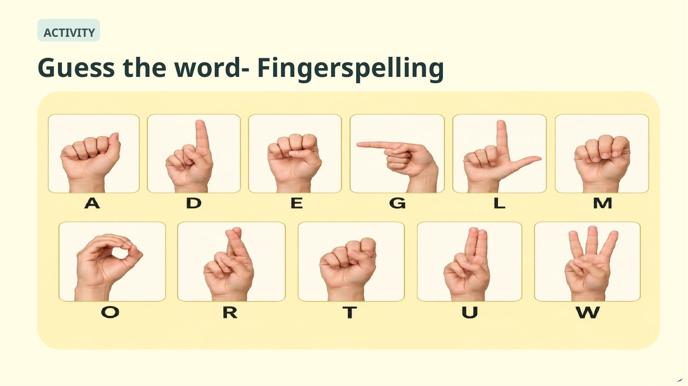

← Back to Academic WorkGROUP PRESENTATION
The Day Language Came into My Life
Helen Keller — How Language Transformed a Life
By Khawla Hussain, Fathimathu Nooriya, Noora Al-Subaey and Noor Almuhannadi
Slide 1 of 10
Slide 2 of 10
Slide 3 of 10
Slide 4 of 10
Slide 5 of 10
Slide 6 of 10
Slide 7 of 10
Slide 8 of 10Slide 9 of 10
Slide 10 of 10